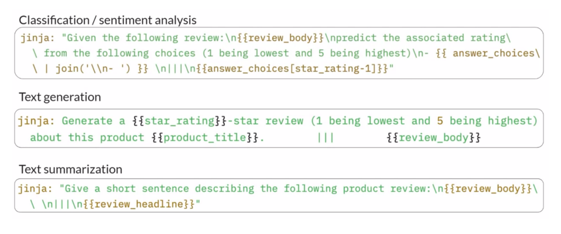
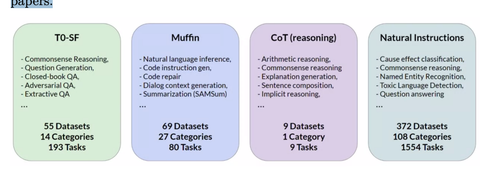

Instruction Fine-Tuning
Lora⚑
LoRA is a PEFT technique based on reparameterization. The encoder and decoder blocks of a Transformer consist of self-attention (in the form of Multi-Headed Attention) layers. Weights are applied to the input embedding vectors to obtain an attention map for the input prompt. In full fine-tuning, every weight in these layers is updated. In LoRA:
- All the model parameters are frozen.
- Two (smaller) rank decomposition matrices A and B are injected with the original weights. The dimensions of the matrices are such that their product has the same dimension as that of the original weight matrices.
-
The weights in the smaller matrices are trained via fine-tuning. For inference:
-
We multiply the two low rank matrices to obtain B × A, which has the same dimensions as the frozen weights of the model.
- We add B × A to the original frozen weights.
- The model weights are replaced with these new weights.
We now have a fine-tuned model which can carry out the task(s) we have finetuned it for. Since the model has the same number of parameters as original, there is little to no impact on inference latency. Researchers have found that applying LoRA just to the self-attention layers is often enough to fine-tune for a task and achieve performance gains. However, in principle, we can use LoRA in other components such as the feed-forward layers. Since most of the parameters are the model are in the attention layers, we get the biggest savings when we apply LoRA in those layers.
Multiple Tasks⚑
LoRA also makes it easy to fine-tune a model for different tasks. We can train the model using the rank decomposition matrices for each of the tasks. This will give us a pair of A and B matrices for each task. During inference, we can swap out the matrices depending on the task we want the model to do and update the weights (by adding to the frozen weights).
Choosing The Rank r⚑
In general. The smaller the rank r, the smaller the number of trainable parameters and the bigger the savings on compute.
According to the LoRA paper:
- Effectiveness of higher rank appears to plateau. That is, after a certain rank value, making it larger generally has no effect on performance.
- 4 ≤ r ≤ 32 (in powers of 2) can provide a good trade-off between reducing trainable parameters and preserving performance.
- Relationship between rank and dataset size needs more research.
Hugging Face PEFT⚑
Concepts⚑
1. Hugging Face PEFT allows you to fine-tune a model without having to fine-tune
all of its parameters.
2. Training a model using Hugging Face PEFT requires two additional steps beyond
traditional fine-tuning:
Creating a PEFT config Converting the model into a PEFT model using the PEFT config Inference using a PEFT model is almost identical to inference using a non-PEFT model. The only difference is that it must be loaded as a PEFT model.
Training with PEFT⚑
Creating a PEFT Config⚑
The PEFT config specifies the adapter configuration for your parameter-efficient fine-tuning process. The base class for this is a PeftConfig, but this example will use a LoraConfig, the subclass used for low rank adaptation (LoRA).
A LoRA config can be instantiated like this:
Look at the LoRA adapter documentation for additional hyperparameters that can be specified by passing arguments to LoraConfig(). The Hugging Face LoRA conceptual guide also contains additional explanations.
Converting a Transformers Model into a PEFT Model⚑
Once you have a PEFT config object, you can load a Hugging Face transformers model as a PEFT model by first loading the pre-trained model as usual (here we load GPT-2):
Then using get_peft_model() to get a trainable PEFT model (using the LoRA config instantiated previously):
Training with a PEFT Model⚑
After calling get_peft_model(), you can then use the resulting lora_model in a training process of your choice (PyTorch training loop or Hugging Face Trainer).
Checking Trainable Parameters of a PEFT Model⚑
A helpful way to check the number of trainable parameters with the current config is the print_trainable_parameters() method:
Which prints an output like this:
Saving a Trained PEFT Model⚑
Once a PEFT model has been trained, the standard Hugging Face save_pretrained() method can be used to save the weights locally. For example:
Note that this only saves the adapter weights and not the weights of the original Transformers model. Thus the size of the files created will be much smaller than you might expect.
Inference with PEFT⚑
Because you have only saved the adapter weights and not the full model weights, you can't use from_pretrained() with the regular Transformers class (e.g., AutoModelForCausalLM). Instead, you need to use the PEFT version (e.g., AutoPeftModelForCausalLM). For example:
from peft import AutoPeftModelForCausalLM
lora_model = AutoPeftModelForCausalLM.from_pretrained("gpt-lora")
After completing this step, you can proceed to use the model for inference.
Generating Text from a PEFT Model⚑
You may see examples from regular Transformer models where the input IDs are passed in as a positional argument (e.g., model.generate(input_ids)). For a PEFT model, they must be passed in as a keyword argument (e.g., model.generate (input_ids=input_ids)). For example:
from transformers import AutoTokenizer
tokenizer = AutoTokenizer.from_pretrained("gpt2")
inputs = tokenizer("Hello, my name is ", return_tensors="pt")
outputs = model.generate(input_ids=inputs["input_ids"], max_new_tokens=10)
print(tokenizer.batch_decode(outputs))
Lora Resources⚑
- Lora intro
- Hugging Face PEFT configuration
- Hugging Face LoRA adapter
- Hugging Face Models save_pretrained
- Hugging Face Text Generation
- Hugging Face Peft repository
PEFT Methods in General⚑
Full-fine tuning of large language LLMs is challenging. Fine-tuning requires storing training weights, optimizer states, gradients, forward activations and temporary memory. Things to store other than the weights can take up to 12-20 times more memory than the weights themselves. In full fine-tuning, every weight of the model is updated during training. PEFT methods only update a subset of the weights. They involve freezing most of the layers in the model and allowing only a small number of layers to be trained. Other methods don’t change the weights at all and instead, add new layers to the model and train only those layers. Due to this, the number of trainable weights is much smaller than the number of weights in the original LLM. This reduces the overall memory requirement for training, so much so that PEFT can often be performed on a single GPU. Since most of the LLM is left unchanged, PEFT is also less prone to Catastrophic Forgetting.
Selective⚑
We select a subset of initial LLM parameters to fine-tune. There are several approaches to select which subset of parameters we want to fine-tune. We can decide to train:
- Only certain components of the model.
- Specific layers of the model.
- Individual parameter types
The performance of these approaches and the selective method overall is mixed. There are significant trade-offs in parameter efficiency and compute efficiency and hence, these methods are not very popular.
Reparameterization⚑
The model weights are reparameterized using a low-rank representation. Example techniques are Low Rank Adaptation (LoRA). More detail in its page:
Additive⚑
There are generally two methods:
- Adapters - New trainable layers are added to the model, typically inside the encoder or decoder blocks, after the FFNN or the attention layers.
- Prompt Tuning - The model architecture is kept fixed and instead, the input (prompt) is manipulated to obtain better performance. This can be done by adding trainable parameters to the prompt embeddings, or keeping the input fixed and retraining the embedding weights. Example techniques include Soft Prompts.
Soft Prompts⚑
Prompt tuning is not prompt engineering. Prompt engineering involves modifying the language of the prompt in order to “urge” the model to generate the completion that we want. This could be as simple as trying different words, phrases or including examples for In-Context Learning (ICL). The goal is to help the model understand the nature of the task and to generate better completions. This involves some limitations:
- We require a lot of manual effort to write and try different prompts.
- We are also limited by the length of the context window.
Prompt tuning adds trainable “soft prompts” to inputs that are learnt during the supervised fine-tuning process. The set of trainable tokens is called a soft prompt. It is prepended to the embedding vectors that represent the input prompt. The soft prompt vectors have the same length as the embeddings. Generally, 20-100 “virtual tokens” can be sufficient for good performance.
Prompt tuning does not involve updating the model. Instead, the model is completely frozen and only the soft prompt embedding vectors are updated to optimize the performance of the model on the original prompt. This is very efficient since a very small number of parameters are being trained (10, 000 to 100, 000).
Hugging Face PEFT Library⚑
Key Concepts⚑
1. Hugging Face PEFT allows you to fine-tune a model without having to fine-tune
all of its parameters.
2. Training a model using Hugging Face PEFT requires two additional steps beyond
traditional fine-tuning:
Creating a PEFT config Converting the model into a PEFT model using the PEFT config Inference using a PEFT model is almost identical to inference using a non-PEFT model. The only difference is that it must be loaded as a PEFT model.
Training PEFT⚑
The PEFT config specifies the adapter configuration for your parameter-efficient fine-tuning process. The base class for this is a PeftConfig, but this example will use a LoraConfig, the subclass used for low rank adaptation (LoRA).
A LoRA config can be instantiated like this:
Look at the LoRA adapter documentation for additional hyperparameters that can be specified by passing arguments to LoraConfig(). The Hugging Face LoRA conceptual guide also contains additional explanations.
Instruction Fine-Tuning⚑
Fine-tuning is the process of using labelled data to adapt a pre-trained model to a specific task or tasks. The data consists of prompt-completion pairs. Note that fine-tuning is applied on a pre-trained model and is supervised, as opposed to self-supervised.
Limitations of ICL⚑
We saw how some models are capable of identifying instructions contained in a prompt and correctly carrying out zero-shot inference. On the other hand, we also saw smaller models which fail to do so. In such cases, we use In-Context Learning (ICL) to make the model follow our instructions. There are some disadvantages to this:
- ICL may not always work for smaller models.
- Examples take up space in the context window, reducing the space available
to add useful information in the prompt. To combat these disadvantages while having a model that can follow instructions, we can use instruction fine-tuning.
Instruction fine-tuning is a fine-tuning technique used to improve a model’s performance on a variety of tasks. Here, the training samples are prompts containing instructions while the labels are the expected response of the model in order to follow that instruction:
- Example: If we want to fine-tune a model to improve its summarization ability, the dataset will contain prompts which look like as follows:
- Prompt: Summarize the following text (EXAMPLE TEXT)
- Completion: Summarize the following text (EXAMPLE TEXT) (EXAMPLE COMPLETION)
Instruction fine-tuning where all of the model’s weights are updated is called full fine-tuning. This results in a new version of the model with updated weights. Note that full fine-tuning requires enough memory and compute budget to store all the gradients, optimizer states and other components updated during training (see Efficient Multi-GPU Compute Strategies).
Common Steps Involved in Instruction Fine-Tuning⚑
Prepare the Dataset⚑
There are many publicly available datasets that have been used to train previous generations of LLMs. Most of these datasets are not formatted as instructions. Developers have built prompt template libraries that can be used to take existing datasets (for example, Amazon product reviews) and turn them into instruction prompt datasets for fine-tuning. Prompt template libraries include many templates for different tasks. For example:

Notice how each of the templates has an instruction in it: predict the associated rating, generate an x-star review and give a short sentence describing the following product review. The result is a prompt with an instruction and the example from the original dataset.
Split Dataset⚑
After the dataset is prepared, like any supervised problem, we split the dataset into training, validation and test sets.
Training⚑
The fine-tuning training loop is similar to any other supervised training loop:
- Pass the training data in batches to the model and obtain predictions.
- Calculate the loss. The output of an LLM is a probability distribution over the tokens available in the dataset. Thus, we can compare the probability distribution of the prediction with that of the label and use the standard cross-entropy loss to calculate the loss.
- Calculate some evaluation metric.
- Pass the validation data to the model and obtain predictions.
- Calculate the loss (optional) and the same evaluation metric.
- Backpropagate the loss to update the weights and repeat from the beginning as the next epoch. After training is done, we can evaluate the final performance of the model by passing it the test data and measuring the evaluation metric on model predictions. This process leads to a new version of the model, often called an Instruct Model. It tends to perform better at the tasks we have fine-tuned it for.
Fine-Tuning On a Single Task⚑
Fine-tuning on a single task can be done by simply using a single-task dataset. That is, all prompt-completion pairs in the dataset have the same basic instruction in them. Example: Summarize the following text: (EXAMPLE TEXT) (EXAMPLE COMPLETION) In most cases, only a small dataset (500-1000 examples) is required to achieve good performance on a single-task.
Catastrophic Forgetting⚑
Fine-tuning on a single task can lead to a problem called catastrophic forgetting. This happens since full fine-tuning changes the weights of the original LLM. This leads to great performance on the task we are fine-tuning for but can degrade performance on other tasks. For example, a model fine-tuned for sentiment analysis might become very good at the task, but might fail on something like named entity recognition despite being performant on it before fine-tuning.
Avoiding Catastrophic Forgetting⚑
First, we have to figure out whether our model is actually impacted by the problem. For example, if we require reliable performance only on the single task we are fine-tuning for, we do not need to worry about catastrophic forgetting. But, if we want the model to maintain its multi-task performance, we can perform fine-tuning on multiple tasks at the same time. This generally requires 50,000-100,000 examples across many tasks. Another alternative is Parameter Efficient Fine-Tuning (PEFT). PEFT preserves the weights of the original LLM and trains only a small number of task-specific adapter layers and parameters (see [Parameter Efficient Fine-Tuning.
Fine-Tuning On Multiple Tasks⚑
In case of multiple tasks, the dataset contains prompt-completion pairs related to multiple tasks. Example:
- Summarize the following text:
- Rate this review:
- Translate into Python code:
- Identify the places:
The model is trained on this mixed dataset to fine-tune on multiple tasks simultaneously and remove the risk of catastrophic forgetting.
Case Study - FLAN⚑
FLAN (Fine-tuned Language Net) is a family of models fine-tuned on multiple tasks. FLAN models refer to a specific set of instructions used to perform instruction fine-tuning.
FLAN-T5 is the FLAN instruct version of the T5 foundation model while FLAN-PALM is the FLAN instruct version of the PALM foundation model.
FLAN-T5 is general purpose instruct model. It is fine-tuned on 473 datasets across 146 task categories. These datasets are chosen from other models and papers.

For example, the SAMSum dataset is a text summarization dataset. SAMSum has 16,000 messenger-like conversations with their summaries. They were crafted by linguists for the express purpose of training LLMs.
Note that while FLAN models are general-purpose, we might still need Domain Adaptation for it to make it work well for our application.
Instruction Fine tuning Resources⚑
Created: 2024-10-23